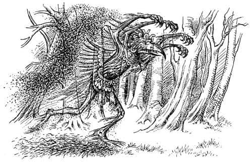
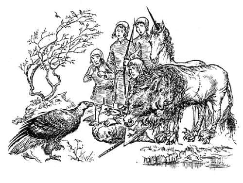
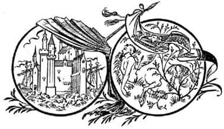

Kartalın Getirdiği Haber
Açık arazinin sona erdiği yerdeki ağaçların gölgesinde bir şey hareket ediyor, yavaşça kuzeye doğru süzülüyordu. İlk bakışta dumana benziyordu, yoğun olmayan gri bir sis gibiydi ve arkasındakileri görebiliyordunuz. Ancak o kötü koku, dumana benzer şeyden gelmiyordu. O tuhaf şey duman gibi dalgalanıp kıvrılmıyor, sabit duruyordu. Gövdesi bir insanı andırıyordu, ama bir kuş kafasına sahipti; kıvrık, yırtıcı bir gagası olan vahşi bir kuş. Başının üzerine kaldırdığı dört kolu vardı, sanki tüm Narnia’yı avuçlarına almak istiyormuş gibi onları öne uzatmıştı; parmakları - yirmisi birden - gagası gibi kıvrıktı, uzun, sivri ve kuşlarınkine benzeyen pençeleri vardı. Otların üzerinde sanki yüzüyor, geçtiği yerdeki otlar sararıyordu.

Şaşkaloz onu gördüğü anda çığlık atar gibi anırıp ok gibi kuleye daldı. Jill (aslında korkak olmadığını siz de bilirsiniz) ona bakmamak için yüzünü elleriyle kapadı. Diğerleri, o şey sağdaki sık ağaçlara dalıp kaybolana kadar seyretmeye devam etti. Sonra güneş tekrar çıktı ve kuşlar şarkı söylemeye başladı.
Herkesin soluğu yavaş yavaş normale döndü. Hepsi de o şeyi gördüğünde heykel gibi hareketsiz kalmıştı.
“Neydi o?” dedi Eustace fısıltıyla.
“Onu bir kere daha görmüştüm” dedi Tirian. “Ama o zaman altın kaplı bir heykeldi ve gözlerinde elmas vardı. Senin yaşındaydım; Tisrok’un Tashbaan’daki sarayına ziyarete gitmiştim. Tisrok beni Taş’ın büyük tapınağına götürdü. Orada görmüştüm, sunağın üzerine oyulmuştu.”
“O zaman o… o Taş mıydı?” dedi Eustace.
Tirian ona cevap vermek yerine kolunu Jill’in omzuna doladı, “Sen nasılsın, Bayan?” dedi.
“İ… iyiyim” dedi Jill, ellerini bembeyaz yüzünden indirip gülümsemeye çalışarak. “İyiyim. Sadece bir an için midemi bulandırdı.”
“Öyle görünüyor ki” dedi Tekboynuz, “her şeye rağmen gerçek bir Taş varmış.”
“Evet” dedi Cüce. “Taş’a inanmayan bu aptal maymun, ettiğinden fazlasını bulacak. Taş’ı çağırdı; Taş da geldi.”
“O şey nereye gitti peki?” dedi Jill.
“Kuzeye, Narnia’nın kalbine” dedi Tirian. “Bizimle kalmaya geldi. Çağırdılar, o da geldi.”
“Ha, ha, ha!” diye kıkırdadı Cüce, kıllı ellerini ovuşturarak. “Maymun için büyük bir sürpriz olacak bu. İnsanlar gerçekten inanmıyorlarsa, şeytanları çağırmamalılar.”
“Taş’ın Maymun’a görünüp görünmeyeceğini kim bilir?” dedi Cevher.
“Şaşkaloz nereye gitti?” dedi Eustace.
Hepsi Şaşkaloz’u çağırdı ve Jill onu aramak üzere kulenin arkasına dolandı.
Aramaktan epeyce yorulmuşlardı ki, Şaşkaloz’un büyük ve kır başı kapının ardında göründü. “Uzaklaştı mı?” diye sordu. Onu dışarıya çıkarabildiklerinde, bir köpek fırtına öncesinde nasıl titrerse o da öyle titriyordu.
“Şimdi anlıyorum ki” dedi Şaşkaloz, “gerçekten çok kötü bir eşekmişim. Külyutmaz’ı dinlememeliydim. Böyle şeylerin olacağını hiç düşünmemiştim.”
“Akıllı olmadığını söylemek için zaman harcayacağına, olabildiğince akıllı davranmayı denemeye uğraşsaydın…” diye başladı Eustace, ama Jill sözünü kesti.
“Zavallı yaşlı Şaşkaloz’u rahat bırak. Bir yanlışlık oldu işte, değil mi sevgili Şaşkaloz?” dedi ve eşeğin burnunu öptü.
Gördükleri yüzünden sarsılmış olmalarına rağmen konuşmalarına devam ettiler.
Cevher’in söyleyecek pek fazla şeyi yoktu. Esirken zamanının tümünü bağlı olarak geçirmiş ve düşmanın planlarından hiçbirini duyamamıştı. Her akşam dışarıya çıkarılıp onlara gösterilen şeyin Aslan olduğuna inandığını söylemesi için tekmelenmiş (o da boş durmayıp çifteler savurmuştu), dövülmüş ve ölümle tehdit edilmişti. Kurtarılmasaydı o sabah idam edilecekti. Kuzuya ne olduğunu ise bilmiyordu.
Bir seçim yapmaları gerekiyordu; ya o gece Ahır Tepe’ye dönüp Şaşkaloz’u Narnialılar’a göstererek onlara aldatıldıklarını anlatmaya çalışacaklar, ya da doğuya doğru gidip Sentor Bilge’nin Cair Paravel’den getireceği yardımı karşılayacak ve Maymun ve Calormenliler’den daha güçlü olarak geri döneceklerdi. Tirian ilk planı uygulamak istiyordu, çünkü Maymun’un halkına zulmetmeye devam edeceği fikrinden nefret ediyordu. Öte yandan cücelerin dün akşamki davranışları da bir uyarı niteliğindeydi. Anlaşılan o ki Şaşkaloz’u gösterse bile onların bunu nasıl karşılayacağından emin olamazdı. Calormen askerlerini de unutmamak gerekiyordu. Zıpır, yaklaşık otuz asker olduğunu düşünüyordu. Tirian, eğer Narnialılar’ın hepsi ondan yana olursa, o, Cevher, çocuklar ve cücenin (Şaşkaloz’u adam yerine koymuyordu) otuz askeri yenme şansının yüksek olduğunu düşünüyordu. Fakat ya Narnialılar’ın yarısı - cüceler de dahil olmak üzere - sadece oturup seyrederse? Ya da ona karşı savaşırlarsa? Risk çok fazlaydı. Bulut gibi bir görünüp bir kaybolan Taş da gelmişti. Ne yapabilirdi acaba?
Sonra Zıpır’ın da söylediği gibi, Maymun’u bir-iki günlüğüne kendi haline bırakmanın hiç zararı olmazdı. Artık gösterebileceği bir Şaşkaloz yoktu. Bunu açıklamak için onun - ya da Kızıltüy’ün - nasıl bir hikâye uyduracaklarını tahmin etmek pek kolay değildi. Hayvanlar Aslan’ı görmek isterse ve gösterecek Aslan yoksa, en safı bile kuşkulanmaya başlardı.
Sonunda hepsi en iyi şeyin gidip Bilge’yi karşılamak olduğunda karar kıldı.
Buna karar verir vermez herkesin ne kadar neşelendiğini görmek harikaydı. Ben bunun kavgadan korkmalarından kaynaklandığını düşünmüyorum (belki Jill ve Eustace hariç). Sanırım her biri, Ahır Tepe’yi uğrak yeri yapmış, görünse de görünmese de korkunç olan o kuş kafalı şeyin yakınına yaklaşmayacaklarından dolayı memnundu. Her neyse, insan bir kere bir şeye karar verdi mi kendini daima iyi hisseder.
Tirian, Calormenliler’le karıştırılmamak ve karşılaşacakları sadık Narnialılar’ın muhtemel saldırısına uğramamak için, kıyafet değiştirmenin iyi olacağını söyledi. Cüce ocaktaki külleri ve kılıçlarla mızrak uçlarına sürülmek üzere saklanan yağı kullanarak iğrenç görünüşlü bir şey hazırladı. Sonra Calormen zırhlarını çıkarıp dereye gittiler. O iğrenç karışım tıpkı arapsabunu gibi köpürüyordu. Tirian ve iki çocuğun suyun yanında çömelerek birbirlerinin enselerini keselemeleri ya da durulanırken oflayıp puflamaları çok hoş bir görüntüydü. Sanki parti öncesi banyo yapan insanlar gibi kıpkırmızı ve parlak yüzleriyle kuleye geri döndüler. Düz kılıçları, üçgen kalkanlarıyla gerçek Narnialılar gibi silahlandılar. “Kendime geldim” dedi Tirian. “Böylesi daha iyi. Tekrar gerçek bir adam olduğumu hissediyorum.”
Şaşkaloz aslan postunun üzerinden alınması için çok yalvardı. Çok sıcak olduğunu, eğreti durduğundan çok rahatsız ettiğini ve aynı zamanda onu gülünç gösterdiğini söylüyordu. Ancak bir süre daha üzerinde kalması gerektiğini söylediler, Bilge’yle buluşacak olmalarına rağmen, onu diğer hayvanlara göstermek istiyorlardı.
Güvercin ve tavşan etinden artanları taşımaya değmezdi ama yanlarına biraz kurabiye aldılar. Tirian kulenin kapısını kilitledi; bu orayı son görüşleri olacaktı.
Yola çıktıklarında saat öğleden sonra ikiydi, baharın ilk sıcak günüydü. Yapraklar dünkünden çok daha fazla büyümüş görünüyordu; kardelenlerin zamanı geçmişti ama birçok çuhaçiçeği gördüler. Gün ışığı ağaçların arasından tatlı tatlı süzülüyor, kuşlar şarkı söylüyor, (görünmemesine rağmen) akan suyun sesi duyuluyordu. Taş gibi iğrenç şeyleri düşünmek zordu. Çocuklar, “İşte gerçek Narnia bu” diye düşünüyorlardı. Eski bir Narnia marşını mırıldanarak önlerinde yürüyen Tirian’ın bile yüreği ferahlamıştı. Marşın nakaratı şöyleydi:
Hey, gürlesin, gürlesin, gürlesin,
Gürlesin vurdukça davullar.
Kral’ı, Eustace ve Zıpır takip ediyordu. Zıpır, Eustace’e önceden bilmediği tüm Narnia ağaçlarının, kuş ve bitkilerinin isimlerini söylüyordu. Eustace de arada sırada İngiltere’dekiler hakkında bilgi veriyordu.
Onların ardından Şaşkaloz yürüyor, Şaşkaloz’u da Jill’le Cevher izliyordu. Jill’in Cevher’e âşık olduğunu anlayabilirdiniz. Onun şimdiye kadar karşılaştığı en parlak, en zarif ve en narin hayvan olduğunu düşünüyordu, ki bunda yanıldığı da söylenemezdi; öylesine kibar ve yumuşak konuşuyordu ki, savaşta ne kadar korkunç ve vahşi olduğuna inanamazdınız.
“Ah, bu çok güzel!” dedi Jill. “Böyle yürümek. Keşke bu tür şeyleri daha sık yapabilseydik. Ne yazık ki Narnia’da kötü şeyler oluyor.”
At yanıldığını söyledi. Âdemoğullarıyla Havvakızlarının sadece karışıklık olduğu zamanlarda çağrıldıklarını, ama Narnia’nın her zaman böyle olmadığını söyledi. Onların ziyaretleri arasında, isimlerini, hatta sayılarını bile hatırlayamadığı barışçı kralların birbirlerini takip ettiği yüzlerce, binlerce yıl vardı; tarih kitaplarına yazılması gereken öylesine az şey olmuştu ki. Sonra Jill’in isimlerini hiç duymadığı eski kraliçe ve kahramanlardan söz etti. Beyaz Cadı’dan; büyük kıştan önce yaşayan, ormandaki herhangi bir gölete baktığında yüzünün görüntüsü yıldız gibi bir yıl bir gün boyunca gölette parlayan müthiş güzel Kraliçe Kuğutüy’den söz etti. Kazan Göleti’nin yanında, Büyük Çağlayan’ın gürültüsünde oturup, Cair Paravel’deki insanların fısıldadıklarını duyabilen kulaklara sahip Tavşan Yelkenkulak’ı anlattı. Bütün kralların ilki olan Frank’ın dokuzuncu kuşaktan torunu olan Kral Gale’in Doğu Denizleri’ne yelken açışını, Issız Adalılar’ı bir ejderhadan kurtarışını ve karşılığında Issız Adalar’ın sonsuza kadar Narnia kraliyet topraklarının bir parçası olmak üzere ona verilişini anlattı. Narnialılar’ın çok mutlu olduğu, dansların, ziyafetlerin ya da yarışmaların yapıldığı ve her günün bir öncekinden daha iyi olduğu yüzyıllardan söz etti. Cevher anlattıkça, tüm o mutlu yılların binlercesinin birden resimleri birbirine eklendi ve sonunda Jill kendini yüksek bir tepeden, ağaçlar, nehirler ve mısır tarlalarıyla dolu, ufuğa doğru uzanarak ince bir sis haline gelen verimli güzel bir ovaya bakıyormuş gibi hissetti. “Ah, umarım yakında maymuna gereken dersi verip o güzel ve eğlenceli zamanlara geri döneriz. Umarım sonsuza kadar böyle devam eder. Bir gün bizim dünyamızın sonu gelecek. Belki bu dünyanınki gelmez. Ah, Cevher Narnia sonsuza kadar yaşasa güzel olmaz mı? Her zaman senin anlattığın gibi olsa!” dedi.
“Hayır, kardeşim” diye cevapladı Cevher, “Aslan’ın kendi ülkesi hariç tüm dünyaların sonu gelir.”
“Şey, en azından bu son milyonlarca yıl sonra olur, değil mi? Hey! Neden durduk?”
Kral, cüce ve Eustace gökyüzüne bakıyordu. Gördükleri dehşeti hatırlayan Jill ürperdi. Ama bu kez öyle bir şey değildi. Küçüktü ve mavi gökyüzünde siyahmış gibi görünüyordu.
“Yemin ederim ki” dedi Cevher, “uçuşuna bakılırsa, bu bir konuşan kuş.”
“Ben de öyle düşünüyorum” dedi Kral. “Dost mu yoksa maymunun casusu mu?”
“Bence, efendim” dedi cüce, “Kartal Keskingöz’e benziyor.”
“Ağaçların altına saklansak mı?” dedi Eustace.
“Hayır” dedi Tirian, “en iyisi kıpırdamadan taş gibi dikilmek. Hareket edersek bizi kesinlikle fark eder.”
“Bakın! Daire çiziyor, bizi gördü bile” dedi Cevher. “Döne döne aşağı iniyor.”
“Okunu yayına tak, Bayan” dedi Tirian Jill’e. “Ama ben izin vermedikçe kullanma. Dost olabilir.”
İnsanın içi rahat olsa, o kocaman kuşun zarafetle süzülerek yere inişini seyretmek bir zevk olurdu. Kuş, Tirian’ın birkaç metre önündeki kayaya kondu, sorguçlu başını eğdi, garip kartal sesiyle, “Selam, Kralım” dedi.

“Selam, Keskingöz” dedi Tirian. “Bana kral diye hitap ettiğine göre, maymunun yandaşı olmadığına inanabilirim. Geldiğine sevindim.”
“Efendim” dedi kartal, “getirdiğim haberi duyduğunuzda, başınıza gelen en büyük acıya üzüldüğünüzden daha fazla üzüleceksiniz.”
Bu sözleri duyduğunda Tirian’ın kalbi duracak gibi oldu, ama dişlerini sıktı. “Anlat” dedi.
“İki şey gördüm” dedi Keskingöz. “Birincisi, Cair Paravel ölü Narnialılar ve canlı Calormenliler’le dolu. Burçlarınıza Tisrok’un sancağı çekilmiş; halkınız şehirden - şu veya bu şekilde - ormana kaçıyor. Cair Paravel denizden fethedildi. Bir önceki gece yirmi büyük Calormen gemisi demirlemiş.”
Kimse konuşamadı.
“İkincisi, Cair Paravel’in beş fersah uzağında, karnında bir Calormen okuyla Sentor Bilge yatıyor. Son dakikalarında onunla beraberdim, siz Ekselanslarına şu mesajı gönderdi: Unutmayın ki, tüm dünyaların er ya da geç sonu gelecektir ve soylu ölüm onu hak eden herkes için bir hazinedir.”
“Öyleyse” dedi Kral uzun bir sessizlikten sonra, “artık Narnia yok.”
